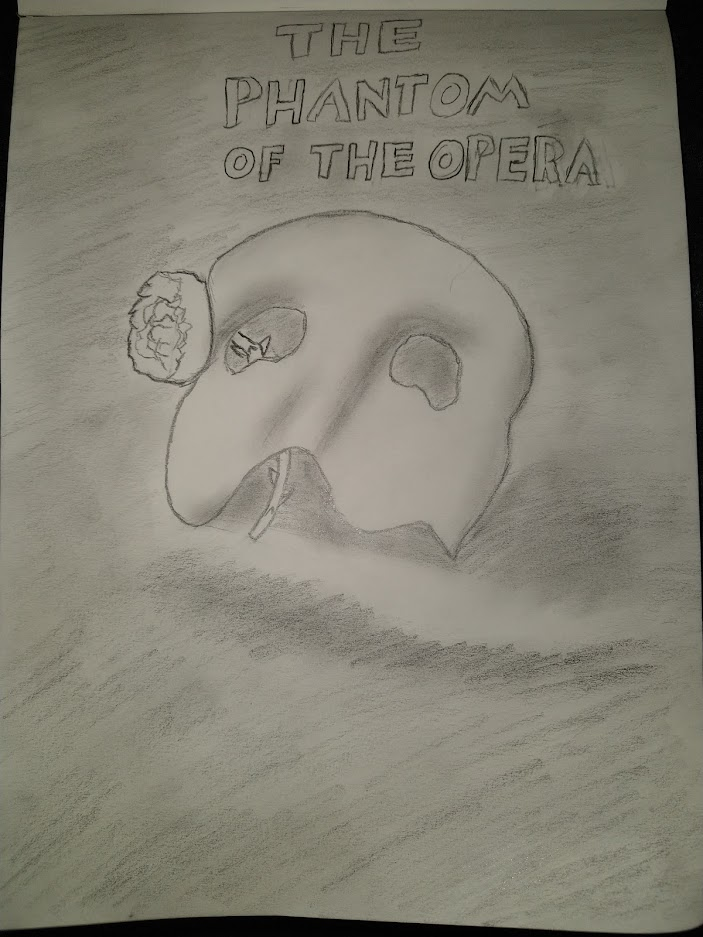

The following images and videos are some highlights from this school year so far. Starting with this poster I drew for my illustration class last semester

This is footage from a test build of a game I made for Game Engines last semester called Lost In The Woods
This video is from winter break when I was back home in Washington and we got a massive amount of snow